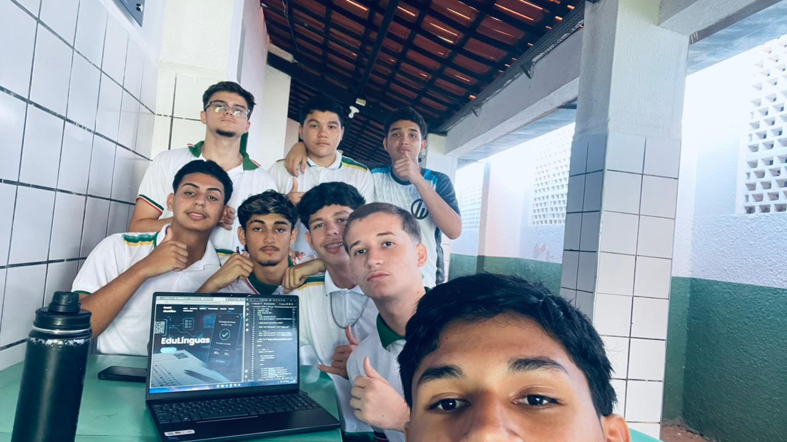
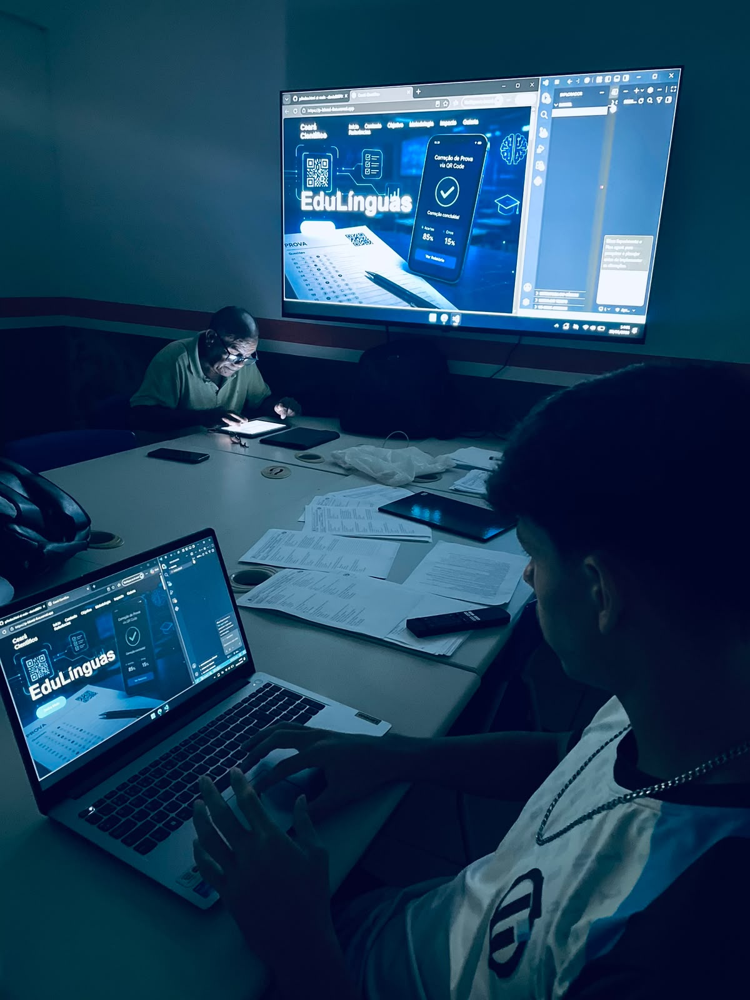
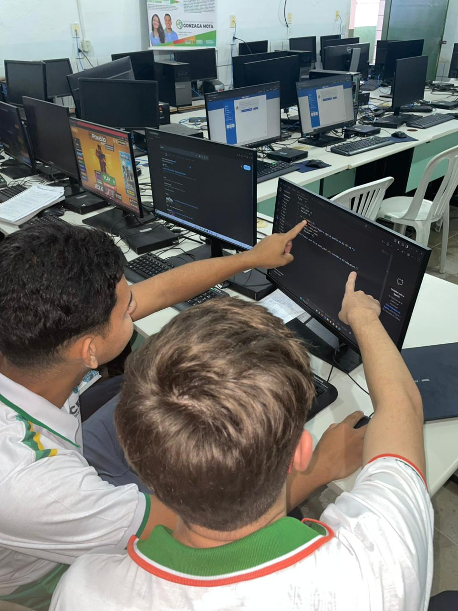

O Problema: Na área de Linguagens e Códigos (Língua Portuguesa, Arte, Educação Física e Língua Estrangeira), o grande volume de notas, redações e simulados gera um excesso de dados. Corrigir e organizar tudo isso manualmente em planilhas consome muito tempo dos professores e atrasa o diagnóstico de quem está com dificuldades.
A Solução: Alinhado ao tema do Ceará Científico 2026 ("o conhecimento a serviço da vida coletiva"), o projeto criou um sistema automático que elimina o trabalho burocrático, gerando diagnósticos rápidos para que a escola ajude o estudante antes que ele desmotive ou tenha baixo desempenho em exames como o SPAECE.
Objetivo Geral: Desenvolver e implementar um aplicativo/painel digital para automatizar a coleta, o processamento e a visualização em tempo real do nível de aprendizado dos alunos na área de Linguagens.
Objetivos Específicos:
Organizar e separar as informações de notas por habilidades e disciplinas dentro do aplicativo.
Entregar uma interface visual simples e intuitiva para a consulta dos professores.
Otimizar o tempo dos docentes, trocando o trabalho manual de digitação pelo planejamento de intervenções pedagógicas eficazes.
Diálogo com a coordenação e professores para identificar os principais gargalos na organização de notas e relatórios.
Construção e prototipagem das telas e da interface do painel utilizando a plataforma "Lovable".
Desenvolvimento da lógica e estilização do sistema usando as linguagens "TypeScript", "JavaScript" e "CSS", com apoio dos modelos de IA "ChatGPT 5.0" e "Gemini", e versionamento seguro no "GitHub".
Valor Social: Transforma dados que ficariam guardados em relatórios em alertas visuais imediatos.
Resultados na Prática: Reduz o tempo de resposta pedagógica de semanas para minutos, garantindo o direito de aprendizagem do aluno em tempo hábil e promovendo uma educação pública mais justa e baseada em evidências.


